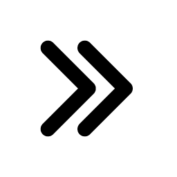
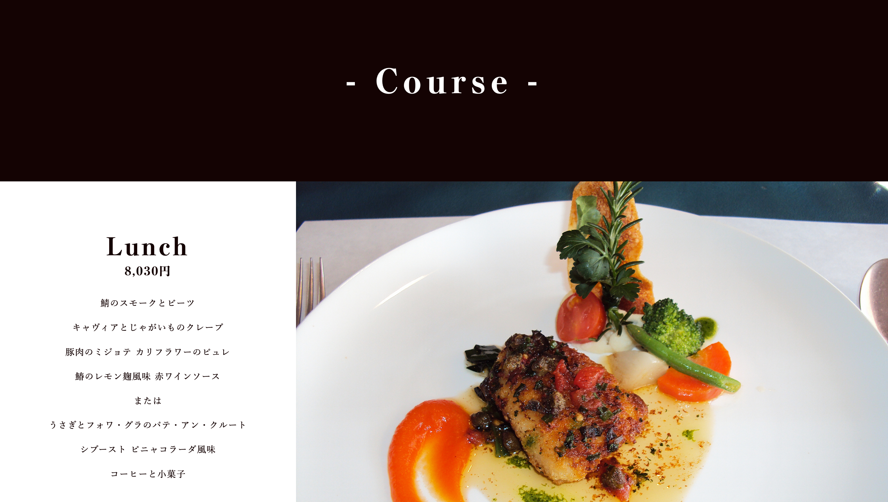

ー Webサイトデザイン+コーディング
フレンチカフェ Café de Paris
WEBサイトデザイン
+コーディング
使用ツール
AdobeXD
製作期間
2週間
使用言語
HTML
CSS
JavaScript
担当箇所
リサーチ
デザインカンプ作成
コーディング

制作背景
授業内課題にて、「フレンチカフェのトップページを作成する」といった課題が課されたため。
制作における課題
- ・フレンチカフェ Café de ParisのWebサイトの作成
- ・配布されたロゴを使用し制作すること
- ・提示されたクライアントからの制作依頼に沿ったデザインをする。
- ・お店の雰囲気とイメージ、また食事の内容を伝えることのできるトップページが欲しい
- ・サイトの目的→お店の紹介
- ・ターゲットユーザー→20代~30代の男女がメインターゲット
- ・平均使用金額→1000円~1800円 ※ベーシックな金額
- ・サイトのイメージ→おしゃれで明るく身近なイメージ
- 【掲載希望内容は以下の通り】
「店舗の紹介」
「メニュー紹介」
「お店の所在・電話・FAX番号など」
「ニュース」
依頼内容
課題解決のためのリサーチ
①リサーチ
- ・依頼書を熟読
- ・本場パリの雰囲気を調査
- ・このサイトを経由して来店するまでの導線を考える
- ・おしゃれで明るく身近なイメージとはどのようなものか調査
②リサーチをもとに分析
- ・パリの景色から連想したイメージは、繊細で重厚、硬い石、整っている、窮屈だけど開放感。
- ・想定する来店パターンは「検索→サイト訪問→サイト閲覧→来店」。この流れを作りたい。
- ・場所が西新宿のため、買い物帰りにも寄ることができそう
- ・おしゃれ→整っている＋大胆さor繊細さ
- ・明るい→白、光、透明感、原色
- ・身近→落ち着いた、笑顔、ナチュラル
③行動
- ・パリ感を出すために、ロゴのフランスのトリコロールカラーを使用
- ・重厚なイメージを太めのゴシック体で表現
- ・窮屈だが開放感のあるイメージは画面の情報の多さ＋情報間の広めの余白で表現
- ・おしゃれ感を出すために大胆なタイポグラフィと整ったレイアウトを併用
- ・明るさは背景や文字色に白を、写真に自然光がよく射しているものを使用することで表現
- ・身近さは背景や文字色にナチュラルなカラーを使用し、アイアンウッドを多用した店内の写真を複数掲載することで表現

ー コンセプト ー
本場パリを思わせる、おしゃれで
明るく身近なイメージのデザイン
ー ターゲット ー
20〜30代の男女。
男女、女子同士などの二人組。
作品の工夫点
①ファーストビューで明るくおしゃれなイメージを表現
- ・大胆なタイポグラフィ＋アニメーションでおしゃれ感を演出
- ・白を基調に原色を使用することで明るく元気で身近なイメージを演出
- ・ロゴは主張の激しい配色のため小さめに配置
②ホバーでお店の簡単な説明が見られるアニメーション
- ・アニメーションを用いて遊び心あるデザインにすることで身近さを表現
- ・サイト閲覧時のひと休みとしての役割もある


③豊富なメニュー量
- ・お店情報のの透明性をもたせ、信頼感を抱いてもらうためにメニューは多めに掲載
- ・メニューは見やすいようにおおよそカテゴリごとに並べている
- ・写真は出来るだけ自然光で明るく写っているものを使用
④フッターも最後まで手を抜かない！
- ・お店で過ごす時と同様に最後まで楽しんで気持ちよく帰ってもらうためにフッターにも大胆なデザインを施し締めとした
- ・青と赤の間に大胆なタイポグラフィを配置することでフランストリコロールを表現

良かった点
- ・2週間という時間でで予定していたところまできちんと作品を完成させることができたこと
- ・リサーチにしっかり時間をかけられたこと
- ・リサーチ結果を作品に落とし込み、活かすことができたこと
- ・先生から課題における最高評価を頂けたこと
反省点
- ・ナビゲーションのホバー時にアニメーションがあっても良かった
- ・ホバーでお店の簡単な説明が見られる箇所はもう少しふわっとしたアニメーションでも良かった
- ・レスポンシブに対応していない（制作時点で習っていなかったが挑戦すれば良かった）